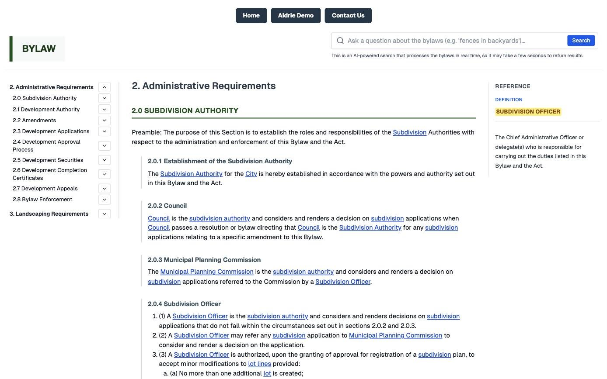

04 — CivicZone
Municipal land use bylaws, searchable section by section
Demo sites built on behalf of CivicZone and Blue Rock Planning.

From a PDF to a site you can read and search
We extract the bylaw from its PDF section by section, with its tables, images and amendments. Every defined term in the text links to its definition, which opens beside the section you are reading.
Search takes a plain question, such as whether you can build a fence in your backyard. It finds matching sections by meaning as well as keywords and returns a short AI summary that cites the section.
- Built with
- Next.js, Payload CMS, PostgreSQL with pgvector and OpenAI embeddings, on Google Cloud Run
- Our role
- Built the demo sites on behalf of CivicZone and Blue Rock Planning
Want something like this for your business?
Writing about CivicZone
No posts yet.